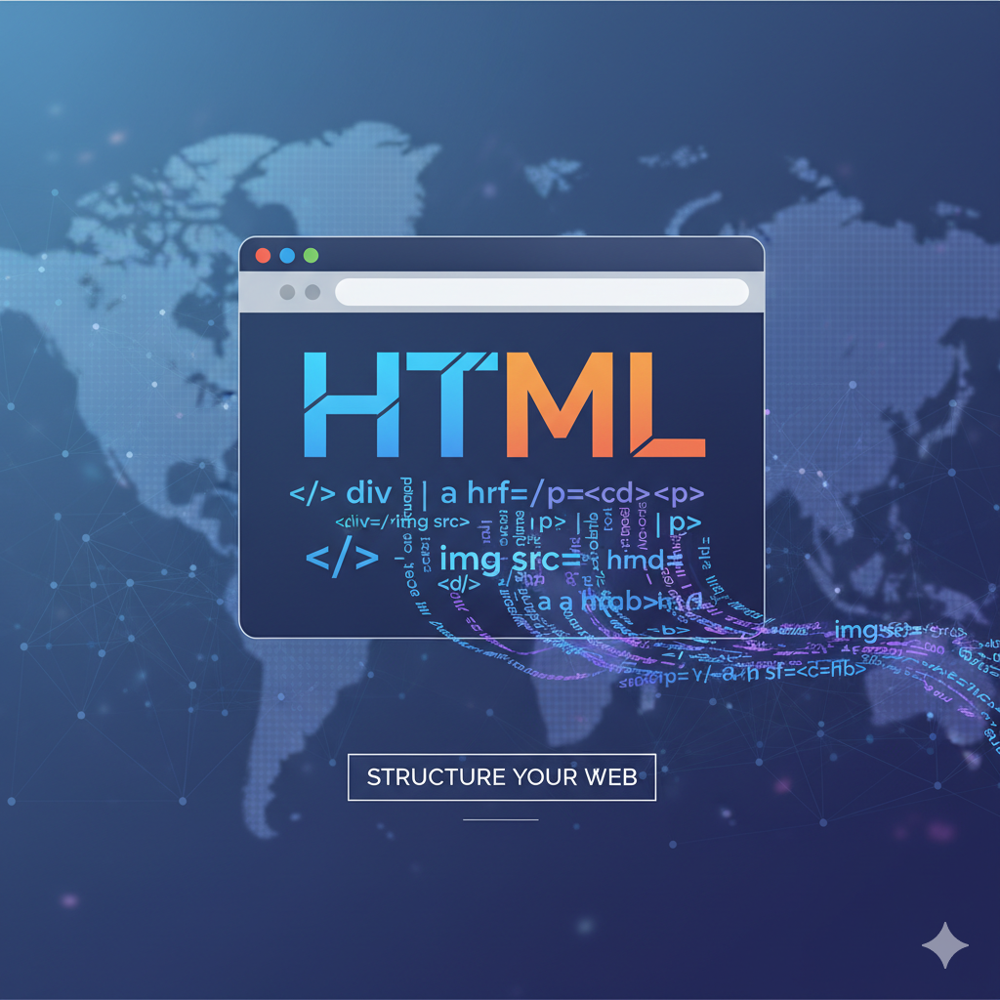
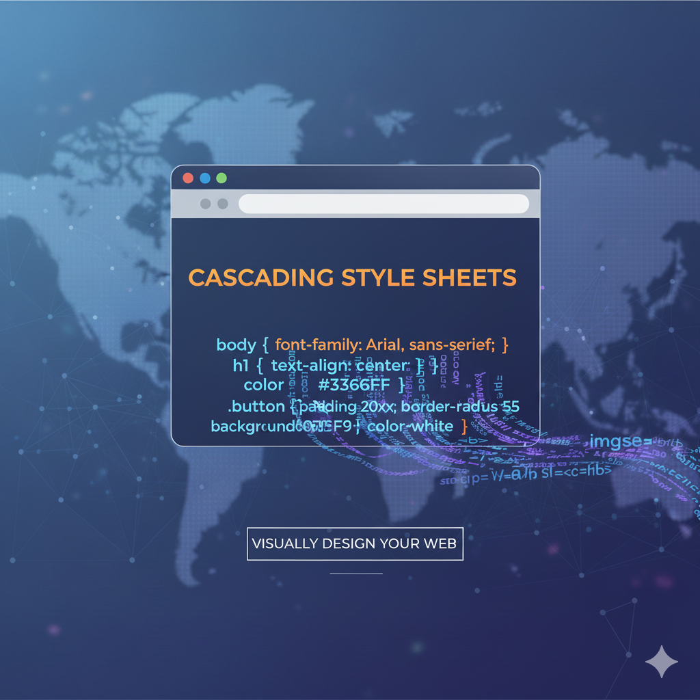
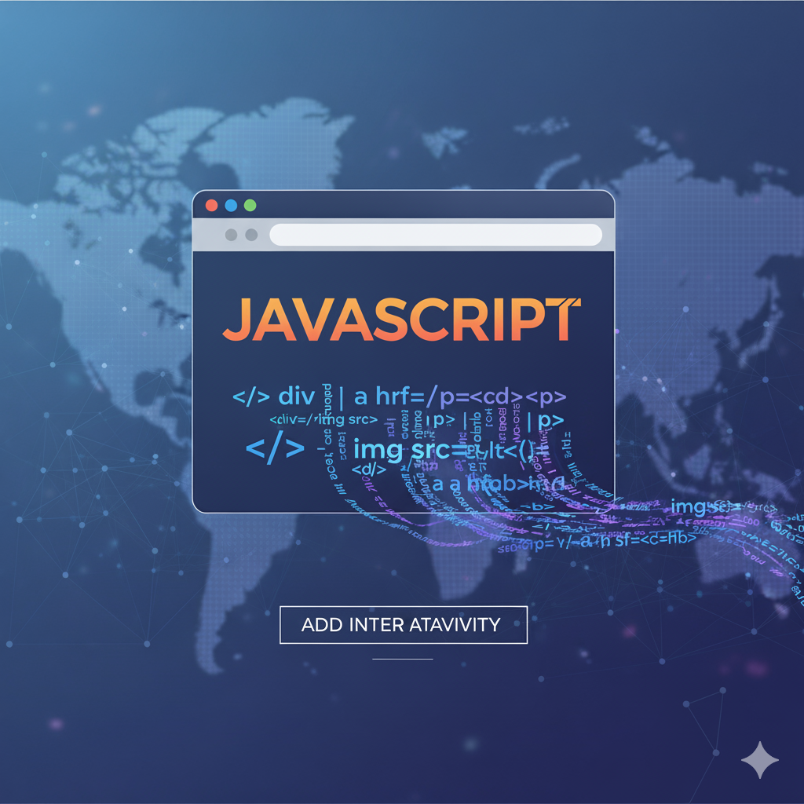
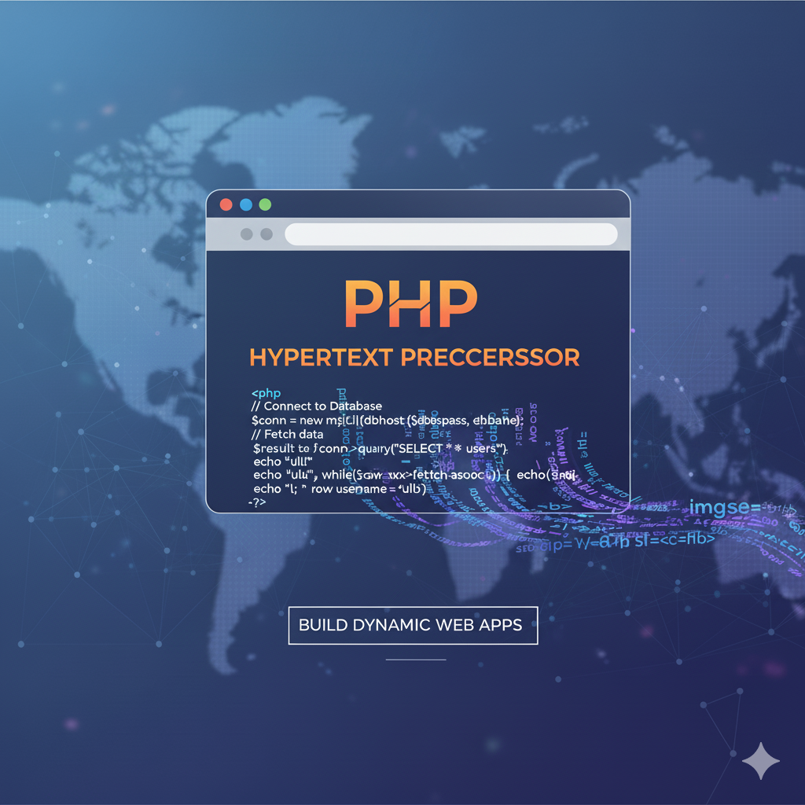

🌐 HTML
HyperText Markup Language

웹 페이지의 **구조**와 **골격**을 담당하는 **마크업 언어**입니다. 텍스트, 이미지, 링크 등 콘텐츠를 정의하고 배치합니다.
- **역할:** 콘텐츠 정의
- **예시 태그:** `
`, `
`, `
`, ``
- **창시자:** **팀 버너스 리**
🎨 CSS
Cascading Style Sheets

HTML 요소가 화면에 **어떻게 보일지(Presentation)**를 정의하는 스타일 시트 언어입니다. 색상, 레이아웃, 폰트 등을 제어합니다.
- **역할:** 디자인 및 시각적 표현
- **예시 속성:** `color`, `font-size`, `display`, `margin`
- **창시자:** **하콘 비움 리**
💡 JavaScript
The Language of the Web

웹 페이지에 **동작(Behavior)**과 **상호작용**을 추가하여 사용자 경험을 향상시키는 프로그래밍 언어입니다. 프론트엔드와 백엔드 모두에 사용됩니다.
- **역할:** 동적인 기능 및 상호작용
- **특징:** 이벤트 처리, DOM 조작, 비동기 통신
- **창시자:** **브렌던 아이크**
⚙️ PHP
Server-Side Scripting Language

주로 **서버 측(Server-Side)**에서 실행되어 동적인 웹 페이지를 생성하는 데 사용되는 스크립트 언어입니다. 데이터베이스와 상호작용합니다.
- **역할:** 백엔드 로직, 데이터베이스 연동
- **특징:** 강력한 커뮤니티, 워드프레스 등에 사용
- **창시자:** **라스무스 러도프**